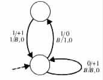
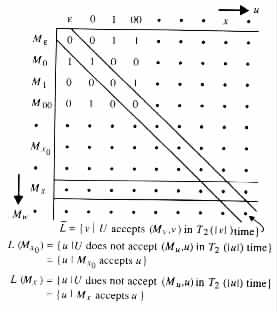
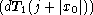
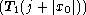
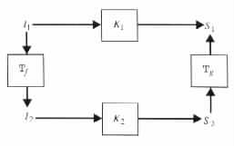

Lower Bounds on Time Complexity
Tractability and Intractability
Intuitively, it seems obvious that some problems require more time to solve than others. The following result confirms this intuitive assessment while implying the existence of a time hierarchy for the class of language recognition problems.
Definitions A function T(n) is said to be time-constructible if there exists a T(n) time-bounded, deterministic Turing machine that for each n has an input of length n on which it makes exactly T(n) moves. The function is said to be fully time-constructible if there exists a deterministic Turing machine that makes exactly T(n) moves on each input of length n. A function S(n) is said to be space-constructible if there exists an S(n) space-bounded, deterministic Turing machine that for each n has an input of length n on which it requires exactly S(n) space. The function is said to be fully space-constructible if there exists a deterministic Turing machine that requires exactly S(n) space on each input of length n.
Example 5.2.1 The deterministic Turing machine M in Figure 5.2.1
|

|
The existence of M implies that T(n) = 2n is a time-constructible function, because
Convention In this section Mx denotes a Turing machine that is represented by the string x of the following form. If x = 1jx0 for some j ³ 0 and for some standard binary representation x0 of a deterministic Turing machine M, then Mx denotes M. Otherwise, Mx denotes a deterministic Turing machine that accepts no input. The string x is said to be a padded binary representation of Mx.
Theorem 5.2.1 Consider any function T1(n) and any fully time-constructible function T2(n), that for each c > 0 have an nc such that T2(n) ³ c(T1(n))2 for all n ³ nc. Then there is a language which is in DTIME (T2(n)) but not in DTIME (T1(n)).
Proof Let T1(n) and T2(n) be as in the statement of the theorem. Let U be a universal Turing machine similar to the universal Turing transducer in the proof of Lemma 5.1.1. The main difference is that here U assumes an input (M, x) in which M is represented by a padded binary representation instead of a standard binary representation. U starts each computation by going over the "padding" 1j until it reaches the first 0 in the input. Then U continues with its computation in the usual manner while ignoring the padding. U uses a third auxiliary work tape for keeping track of the distance of its input head from the end of the padding. The result is shown by diagonalization over the language L = { v | v is in {0, 1}*, and U does not accept (Mv, v) in T2(|v|) time }.
L is obtained from the diagonal of the table Tuniversal (see Figure 5.2.2).
|

|
Specifically, for the purpose of showing that L is not in DTIME (T1(n)), assume to the contrary that L is in the class. Under this assumption, there is a dT1(n) time-bounded, deterministic Turing machine M that accepts L, for some constant d. Let x0 be a standard binary representation of M, and c be the corresponding constant cM implied by Lemma 5.1.1 for the representation x0 of M. Let x = 1jx0 for some j that satisfies j + c(dT1(j + |x0|))2 £ T2(j + |x0|), that is, x = 1jx0 for a large enough j to allow U sufficient time T2(|x|) for simulating the whole computation of Mx on input x. Such a value j exists because for big enough j the following inequalities hold.
| j + c 2 | £ | (j + |x 0|) + c 2 | ||
| £ | T1(j + |x0|) + c 2 | |||
| £ | (1 + cd2) 2 | |||
| £ | T2(j + |x0|) |
Consider the string x = 1jx0. By definition, |x| = j + |x0| and so j + c(dT1(|x|))2 £ T2(|x|). Moreover, x is a padded binary representation of M. For the string x one of the following two cases must hold. However, neither of them can hold, so implying the desired contradiction to the assumption that L is in DTIME (T1(n)).
Example 5.2.2
Let T1(n) = nk and T2(n) = 2n. T1(n) and T2(n) satisfy the conditions of
Theorem 5.2.1. Therefore the class DTIME (2n) properly contains the class DTIME (nk).
Lower Bounds on Time Complexity
In addition to implying the existence of a time hierarchy for the language recognition problems, Theorem 5.2.1 can be used to show lower bounds on the time complexity of some problems. Specifically, consider any two functions T1(n) and T2(n) that satisfy the conditions of Theorem 5.2.1. Assume that each membership problem Ki for a language in DTIME (T2(n)) can be reduced by a T3(n) time-bounded, deterministic Turing transducer Mi to some fixed problem K (see Figure 5.2.3).
Example 5.2.3
Consider the time bounds T1(n) = 2an, T2(n) = 2bn for b > 2a, and
T3(n) = f(n) = n log n. For such a choice, T3(n) + T(f(n)) > cT1(n) implies
that n log n + T(n log n) > c2an. By substituting m for n log n it follows that
T(m) > c2an - m = c2am/log n - m ³ c2am/log m - m ³ 2dm/log m or, equivalently,
that T(n) > 2dn/log n for some constant d.
The approach above for deriving lower bounds is of special interest in the identification of intractable problems, that is, problems that require impractical amounts of resources to solve. Such an identification can save considerable effort that might otherwise be wasted in trying to solve intractable problems.
Tractability and Intractability
In general, a problem is considered to be tractable if it is of polynomial time complexity. This is because its time requirements grow slowly with input length. Conversely, problems of exponential time complexity are considered to be intractable, because their time requirements grow rapidly with input length and so can be practically solved only for small inputs. For instance, an increase by a factor of 2 in n, increases the value of a polynomial p(n) of degree k by at most a factor of 2k. On the other hand, such an increase at least squares the value of 2p(n).
The application of the approach above in the identification of intractable problems employs polynomially time-bounded reductions.
A problem K1 is said to be polynomially time reducible to a problem K2 if there exist polynomially time-bounded, deterministic Turing transducers Tf and Tg that for each instance I1 of K1 satisfy the following conditions (see Figure 5.2.4).
|

|
A given complexity class C of problems can be used to show the intractability of a problem K by showing that the following two conditions hold.
 . In such a case, the easier K is the easier the reductions are, and the larger the class
of such applicable problems
. In such a case, the easier K is the easier the reductions are, and the larger the class
of such applicable problems  is.
is.
The observation above sparks our interest in the "easiest" intractable problems K, and in the complexity classes C whose intractable problems are all "easiest" intractable problems.
In what follows, a problem K is said to be a C-hard problem with respect to polynomial time reductions, or just a C-hard problem when the polynomial time reductions are understood, if every problem in the class C is polynomially time reducible to the problem K. The problem K is said to be C-complete if it is a C-hard problem in C.
Our interest here is in the cases that C = NP and C = PSPACE.
![[PICT]](draw-pic/theory-bk-five-5-2-3.jpg)